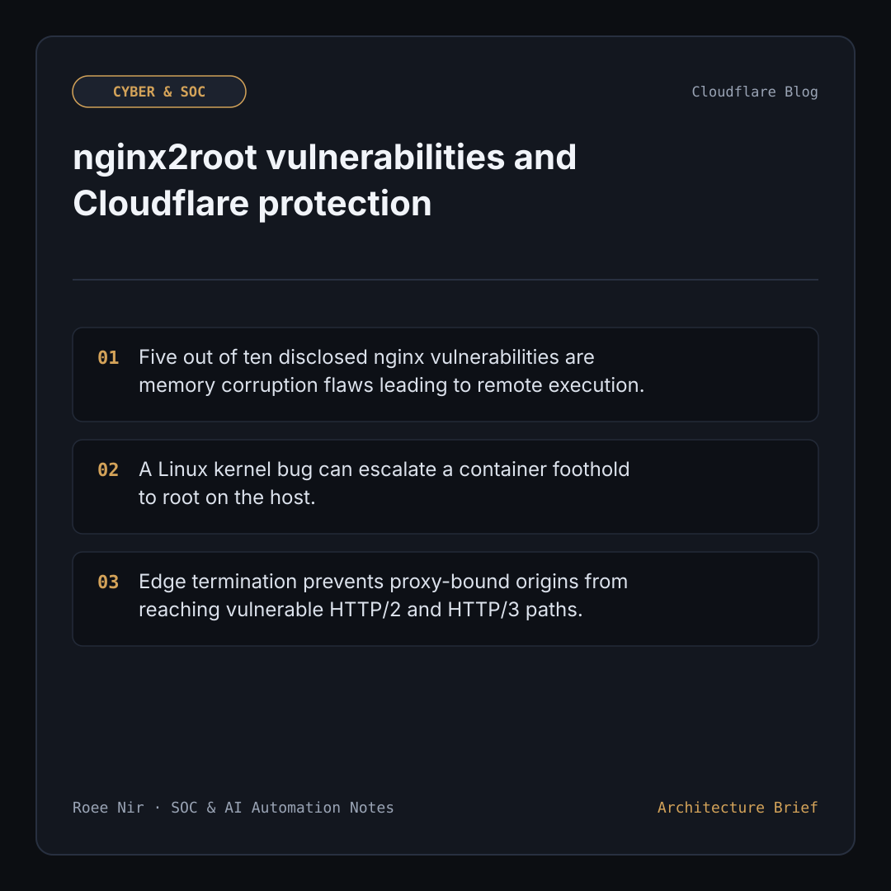

MANUAL PUBLISH PACK · Never auto-posted to LinkedIn without your click.
1. Visual Card (1080x1080)

2. פוסט מוכן + תגובה ראשונה
כשאנליסט ב SOC רואה התראת זיכרון בשרת פרוקסי מרכזי, הדופק מיד עולה. השבוע פורסמו עשרה CVEs חדשים תחת השם nginx2root שחושפים חמש בעיות שחיתות זיכרון קריטיות. מתקפה מוצלחת עלולה לאפשר לתוקף להריץ פקודות ישירות ברמת השרת או לברוח החוצה מתוך קונטיינר של Docker אל מערכת ההפעלה המארחת. בתכלס, בפועל, מה זה אומר לצוותי האבטחה ביום יום? מי שלא מריץ עדכוני Patch דחופים או מסתמך על שכבת הגנה חיצונית בנקודת הקצה, נשאר חשוף לחלוטין לחולשות פרוטוקול מתקדמות. חובה לעבור על כל תצורות ה nginx הארגוניות, לסגור פיצ מיותרים ולוודא שום קוד זדוני לא מנצל נתיבי תקשורת פתוחים. מה הלוש שלך לעדכון מערכות פרוקסי בסביבת הייצור שלך? #CyberSecurity #SOC #Infosec #DevSecOps #Nginx
תגובה ראשונה (לשמירה על חשיפה אורגנית):
לקריאת המחקר והפירוט הטכני המלא מתוך Cloudflare Blog: https://blog.cloudflare.com/nginx2root/